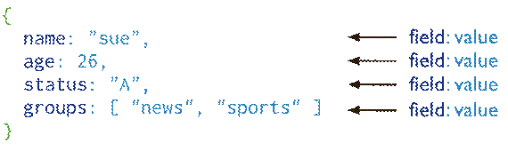
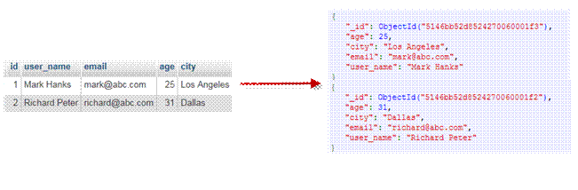

MongoDB
MongoDB
1、NoSQL简介
NoSQL(NoSQL = Not Only SQL)，意即反SQL运动，指的是非关系型的数据库，是一项全新的数据库革命性运动，早期就有人提出，发展至2009年趋势越发高涨。NoSQL的拥护者们提倡运用非关系型的数据存储，相对于目前铺天盖地的关系型数据库运用，这一概念无疑是一种全新的思维的注入
为什幺使用NoSQL :
1、对数据库高并发读写。
2、对海量数据的高效率存储和访问。
3、对数据库的高可扩展性和高可用性。
弱点：
1、数据库事务一致性需求
2、数据库的写实时性和读实时性需求
3、对复杂的SQL查询，特别是多表关联查询的需求
2、什么是MongoDB ?
MongoDB 是由C++语言编写的，是一个基于分布式文件存储的开源数据库系统。
在高负载的情况下，添加更多的节点，可以保证服务器性能。
MongoDB 旨在为WEB应用提供可扩展的高性能数据存储解决方案。
MongoDB 将数据存储为一个文档，数据结构由键值(key=>value)对组成。MongoDB 文档类似于 JSON 对象。字段值可以包含其他文档，数组及文档数组。

3、MongoDB 特点
1、MongoDB 是一个面向文档存储的数据库，操作起来比较简单和容易。
2、你可以在MongoDB记录中设置任何属性的索引 (如：FirstName=”Sameer”,Address=”8 Gandhi Road”)来实现更快的排序。
3、你可以通过本地或者网络创建数据镜像，这使得MongoDB有更强的扩展性。
4、如果负载的增加（需要更多的存储空间和更强的处理能力） ，它可以分布在计算机网络中的其他节点上这就是所谓的分片。
5、Mongo支持丰富的查询表达式。查询指令使用JSON形式的标记，可轻易查询文档中内嵌的对象及数组。
6、MongoDb 使用update()命令可以实现替换完成的文档（数据）或者一些指定的数据字段 。
7、MongoDb中的Map/reduce主要是用来对数据进行批量处理和聚合操作。
8、Map和Reduce。Map函数调用emit(key,value)遍历集合中所有的记录，将key与value传给Reduce函数进行处理。
9、Map函数和Reduce函数是使用Javascript编写的，并可以通过db.runCommand或mapreduce命令来执行MapReduce操作。
10、GridFS是MongoDB中的一个内置功能，可以用于存放大量小文件。
11、MongoDB允许在服务端执行脚本，可以用Javascript编写某个函数，直接在服务端执行，也可以把函数的定义存储在服务端，下次直接调用即可。
12、MongoDB支持各种编程语言:RUBY，PYTHON，JAVA，C++，PHP，C#等多种语言。
13、MongoDB安装简单。
4、安装mongodb
拉取镜像 docker pull mongo:latest
创建和启动容器 docker run -d —restart=always -p 27017:27017 —name mymongo -v /data/db:/data/db -d mongo
进入容器 docker exec -it mymongo/bin/bash
使用MongoDB客户端进行操作 mongo
show dbs #查询所有的数据库
admin 0.000GB
config 0.000GB
local 0.000GB
5、MongoDB 概念解析
不管我们学习什么数据库都应该学习其中的基础概念，在mongodb中基本的概念是文档、集合、数据库，下面我们挨个介绍。
下表将帮助您更容易理解Mongo中的一些概念：
| SQL术语/概念 | MongoDB术语/概念 | 解释/说明 |
|---|---|---|
| database | database | 数据库 |
| table | collection | 数据库表/集合 |
| row | document | 数据记录行/文档 |
| column | field | 数据字段/域 |
| index | index | 索引 |
| table joins | mogoDB不支持多表连接 | 表连接,MongoDB不支持 |
| primary key | primary key | 主键,MongoDB自动将_id字段设置为主键 |
通过下图实例，我们也可以更直观的的了解Mongo中的一些概念：

4.1 数据库
一个mongodb中可以建立多个数据库
常用操作：
1、 Help查看命令提示 db.help();
2、 切换/创建数据库 use test 如果数据库不存在，则创建数据库，否则切换到指定数据库
3、 查询所有数据库 show dbs;
4、 删除当前使用数据库 db.dropDatabase();
5、 查看当前使用的数据库 db.getName();
6、 显示当前db状态 db.stats();
7、 当前db版本 db.version();
8、 查看当前db的链接机器地址 db.getMongo〇;
4.2 文档
文档是一组键值(key-value)对(即BSON)。MongoDB 的文档不需要设置相同的字段，并且相同的字段不需要相同的数据类型，这与关系型数据库有很大的区别，也是 MongoDB 非常突出的特点。
下表列出了 RDBMS 与 MongoDB 对应的术语：
| RDBMS | MongoDB |
|---|---|
| 数据库 | 数据库 |
| 表格 | 集合 |
| 行 | 文档 |
| 列 | 字段 |
| 表联合 | 嵌入文档 |
| 主键 | 主键 (MongoDB 提供了 key 为 _id ) |
需要注意的是：
1、文档中的键/值对是有序的。
2、文档中的值不仅可以是在双引号里面的字符串，还可以是其他几种数据类型（甚至可以是整个嵌入的文档)。
3、MongoDB区分类型和大小写。
4、MongoDB的文档不能有重复的键。
5、文档的键是字符串。除了少数例外情况，键可以使用任意UTF-8字符。
文档键命名规范：
1、键不能含有\0 (空字符)。这个字符用来表示键的结尾。
2、.和$有特别的意义，只有在特定环境下才能使用。
3、以下划线”_”开头的键是保留的(不是严格要求的)。
4.3 集合
集合就是 MongoDB 文档组，类似于 RDBMS （关系数据库管理系统：Relational Database Management System)中的表格。
集合存在于数据库中，集合没有固定的结构，这意味着你在对集合可以插入不同格式和类型的数据，但通常情况下我们插入集合的数据都会有一定的关联性。
常用命令：
1、 创建一个集合（table) db.createCollection( “collName”); 2、 得到指定名称的集合（table ) db.getCollection(“user”);
4.4 MongoDB 数据类型
下表为MongoDB中常用的几种数据类型：
| 数据类型 | 描述 |
|---|---|
| String | 字符串。存储数据常用的数据类型。在 MongoDB 中，UTF-8 编码的字符串才是合法的。 |
| Integer | 整型数值。用于存储数值。根据你所采用的服务器，可分为 32 位或 64 位。 |
| Boolean | 布尔值。用于存储布尔值（真/假）。 |
| Double | 双精度浮点值。用于存储浮点值。 |
| Min/Max keys | 将一个值与 BSON（二进制的 JSON）元素的最低值和最高值相对比。 |
| Arrays | 用于将数组或列表或多个值存储为一个键。 |
| Timestamp | 时间戳。记录文档修改或添加的具体时间。 |
| Object | 用于内嵌文档。 |
| Null | 用于创建空值。 |
| Symbol | 符号。该数据类型基本上等同于字符串类型，但不同的是，它一般用于采用特殊符号类型的语言。 |
| Date | 日期时间。用 UNIX 时间格式来存储当前日期或时间。你可以指定自己的日期时间：创建 Date 对象，传入年月日信息。 |
| Object ID | 对象 ID。用于创建文档的 ID。 |
| Binary Data | 二进制数据。用于存储二进制数据。 |
| Code | 代码类型。用于在文档中存储 JavaScript 代码。 |
| Regular expression | 正则表达式类型。用于存储正则表达式。 |
5、适用场景
适用场景
1、网站数据：Mongo非常适合实时的插入，更新与查询，并具备网站实时数据存储所需的复制及高度伸缩性。
2、缓存：由于性能很高，Mongo也适合作为信息基础设施的缓存层。在系统重启之后，由M ongo搭建的持久化缓存层可以避免下层的数据源过载。
3、大尺寸，低价值的数据：使用传统的关系型数据库存储一些数据时可能会比较昂贵， 在此之前，很多时候程序员往往会选择传统的文件进行存储。
4、高伸缩性的场景：Mongo非常适合由数十或数百台服务器组成的数据库。Mongo的路线图中已经包含对Map Reduce弓摩的内置支持。
5、用于对象及 JSON数据的存储：Mongo的BSON数据格式非常适合文档化格式的存储 及查询。
不适用场合
1、高度事务性的系统：例如银行或会计系统。传统的关系型数据库目前还是更适用于需要大量原子性复杂事务的应用程序。
2、传统的商业智能应用：针对特定问题的BI数据库会对产生高度优化的查询方式。对于此类应用，数据仓库可能是更合适的选择。
三、MongoDB入门
1、常用操作
1.1 INSERT
db.User.save({name:’zhangsan’,age:21,sex:true})
db.User.find()
{“_id”: Objectld(“4f69e680c9106ee2ec95da66”), “name”: “zhangsan”, “age”: 21, “sex”: true}
_id组合
Objectld是、id”的默认类型。Objectld使用12字节的存储空间，每个字节二位十六进制数字， 是一个24位的字符串
时间戳：时间不断变化的
机器：主机的唯_标识码。通常是机器主机名的散列值，这样可以确保不同主机
生成不同的Objectld ,不产生冲突。
PID:为了确保在同一台机器上并发的多个进程产生的Objectld是唯一的，所以加上进程标识符(PID).
计数器：前9个字节保证了同一秒钟不同机器不同进程产生的Objectld是唯一的。 后3个字节就是一个自动增加的计数器，确保相同进程同一秒产生的Objectld也是 不一样。同一秒最多允许每个进程拥有IS 777 2托个不同的Objectld。
1.2 Query
1、WHERE
select * from User where name = ‘zhangsan’
db.User.find({name:”zhangsan”})
2、FIELDS
select name, age from User where age = 21
db.User.find({age:21}, {‘name’:1, ‘age’:1})
3、SORT
在 MongoDB 中使用 sort() 方法对数据进行排序，sort() 方法可以通过参数指定排序的字段，并使用 1 和 -1 来指定排序的方式，其中 1 为升序排列，而 -1 是用于降序排列。
select * from User order by age
db.User.find().sort({age:1})
4、SUCE
在 MongoDB 中使用 limit()方法来读取指定数量的数据，skip()方法来跳过指定数量的数据
# select * from User skip 2 limit 3
db.User.find().skip(0).limit(3)
5、IN
# select * from User where age in (21, 26, 32)
db.User.find({age:{$in:[21,26,32]}})
6、COUNT
# select count(*) from User where age >20
db.User.find({age:{$gt:20}}).count()
7、0R
# select * from User where age = 21 or age = 28
db.User.find({$or:[{age:21}, {age:28}]})
1.3 Update
可直接用类似T-SQL条件表达式更新，或用SaveO更新从数据库返回到文档对象。
# update Userset age = 100, sex = 0 where name = ‘user1’
db.User.update({name:”zhangsan”}, {$set:{age:100, sex:0}})
Update()有几个参数需要注意。
db.collection.update(criteria, objNew, upsert, mult)
criteria:需要更新的条件表达式
objNew:更新表达式
upsert:如FI标记录不存在，是否插入新文档。
multi:是否更新多个文档。
1.4 Remove
removeO用于删除单个或全部文档，删除后的文档无法恢复。
db.User.remove(id) //移除对应id的行 > db.User.remove({}) //移除所有
1.5 aggregate
MongoDB中聚合(aggregate)主要用于处理数据(诸如统计平均值,求和等)，并返回计算后的数据结果。有点类似sql语句中的 count(*)
1.5.1 插入数据
db.article.insert(
{
title: ‘MongoDB Overview’,
description: ‘MongoDB is no sql database’,
by_user: ‘runoob.com’,
url: ‘http://www.runoob.com‘,
tags: [‘mongodb’, ‘database’, ‘NoSQL’],
likes: 100
})db.article.insert(
{
title: ‘NoSQL Overview’,
description: ‘No sql database is very fast’,
by_user: ‘runoob.com’,
url: ‘http://www.runoob.com‘,
tags: [‘mongodb’, ‘database’, ‘NoSQL’],
likes: 10
})db.article.insert(
{
title: ‘Neo4j Overview’,
description: ‘Neo4j is no sql database’,
by_user: ‘Neo4j’,
url: ‘http://www.neo4j.com‘,
tags: [‘neo4j’, ‘database’, ‘NoSQL’],
likes: 750
})
2.5.2 统计sum
现在我们通过以上集合计算每个作者所写的文章数
select by_user, count(*) from article group by by_user
db.article.aggregate([{$group : {_id : “$by_user”, num_tutorial : {$sum : 1}}}])
{ “result” : [ { “_id” : “runoob.com”, “num_tutorial” : 2 }, { “_id” : “Neo4j”, “num_tutorial” : 1 } ], “ok” : 1 }
在上面的例子中，我们通过字段 by_user 字段对数据进行分组，并计算 by_user 字段相同值的总和。
2.5.3 常见的聚合表达式
| 表达式 | 描述 | 实例 |
|---|---|---|
| $sum | 计算总和。 | db.mycol.aggregate([{$group : {_id : “$by_user”, num_tutorial : {$sum : “$likes”}}}]) |
| $avg | 计算平均值 | db.mycol.aggregate([{$group : {_id : “$by_user”, num_tutorial : {$avg : “$likes”}}}]) |
| $min | 获取集合中所有文档对应值得最小值。 | db.mycol.aggregate([{$group : {_id : “$by_user”, num_tutorial : {$min : “$likes”}}}]) |
| $max | 获取集合中所有文档对应值得最大值。 | db.mycol.aggregate([{$group : {_id : “$by_user”, num_tutorial : {$max : “$likes”}}}]) |
| $push | 在结果文档中插入值到一个数组中。 | db.mycol.aggregate([{$group : {_id : “$by_user”, url : {$push: “$url”}}}]) |
| $addToSet | 在结果文档中插入值到一个数组中，但不创建副本。 | db.mycol.aggregate([{$group : {_id : “$by_user”, url : {$addToSet : “$url”}}}]) |
| $first | 根据资源文档的排序获取第一个文档数据。 | db.mycol.aggregate([{$group : {_id : “$by_user”, first_url : {$first : “$url”}}}]) |
| $last | 根据资源文档的排序获取最后一个文档数据 | db.mycol.aggregate([{$group : {_id : “$by_user”, last_url : {$last : “$url”}}}]) |
2.6 索引
索引通常能够极大的提高查询的效率，如果没有索引，MongoDB在读取数据时必须扫描集合中的每个文件并选取那些符合查询条件的记录。
这种扫描全集合的查询效率是非常低的，特别在处理大量的数据时，查询可以要花费几十秒甚至几分钟，这对网站的性能是非常致命的。
索引是特殊的数据结构，索引存储在一个易于遍历读取的数据集合中，索引是对数据库表中一列或多列的值进行排序的一种结构。
db.User.createIndex({“name”:1})
语法中 name值为你要创建的索引字段，1 为指定按升序创建索引，如果你想按降序来创建索引指定为 -1 即可